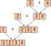
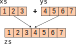
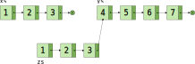
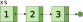
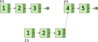

val frente a var).List<T>, Set<T> y Map<T>, que representan colecciones de datos inmutables.List<T>, Map<T>, Set<T>.
listOf() devuelve un objeto de la clase ArrayList.seq() que, dados dos números n y m, construye la lista con los números comprendidos entre n (incluido) y m (no incluido).
fun seq(from: Int, to: Int): List<Int> =
if (from >= to)
emptyList()
else
listOf(from) + seq(from + 1, to)
println(seq(1, 5)) // → [1, 2, 3, 4]
seq(1, 5)
→ [1] + seq(2, 5)
→ [1] + ([2] + seq(3, 5))
→ [1] + ([2] + ([3] + seq(4, 5)))
→ [1] + ([2] + ([3] + ([4] + seq(5, 5))))
→ [1] + ([2] + ([3] + ([4] + [])))
→ [1] + ([2] + ([3] + [4]))
→ [1] + ([2] + [3, 4])
→ [1] + [2, 3, 4]
→ [1, 2, 3, 4]
ArrayList) cada vez que concatenamos dos listas, se genera un array nuevo con los elementos de ambas.

seq(0, N) tiene coste O(N2)val zs = xs + ys
Utilizando arrays + copia defensiva:

val zs = xs + ys
Utilizando listas persistentes:

xs + ys, se realiza una copia de xs, la cual se «engancha» con ys.ys forma parte de zs, pero ys sigue siendo accesible de manera independiente.List<T>
Tipo de los elementos
abstract class List<out T>
object Nil : List<Nothing>()
data class Cons<T>(
val head: T,
val tail: List<T>
) : List<T>()
[1, 2, 3]¿Cómo construimos la siguiente lista?

val xs = Cons(1, Cons(2, Cons(3, Nil)))
Nil representa la lista vacía
object Nil : List<Nothing>()
object porque solamente necesitamos un objeto en memoria que represente la lista vacía.
List<Nothing>, porque Nothing es subtipo de cualquier otro.
Nil también puede utilizarse donde se requiera un List<Int> o un List<String>.
val xs = Cons(1, Cons(2, Nil))
val ys = Cons("Gerardo", Cons("Alicia", Nil))
Cons representa las listas con, al menos, un elemento.
data class Cons<T>(val head: T, val tail: List<T>) : List<T>()
head y recibe el nombre de cabeza de la lista.tail representa la cola de la lista, y puede ser Nil, u otra instancia de Cons.seqseq mediante listas persistentes:
fun seq(from: Int, to: Int): List<Int> =
if (from >= to) Nil else Cons(from, seq(from + 1, to))
seq(1, 5)
→ Cons(1, seq(2, 5))
→ Cons(1, Cons(2, seq(3, 5)))
→ Cons(1, Cons(2, Cons(3, seq(4, 5))))
→ Cons(1, Cons(2, Cons(3, Cons(4, seq(5, 5)))))
→ Cons(1, Cons(2, Cons(3, Cons(4, Nil))))
seq(0, N) ahora tiene coste O(N).List<T>List<T> es recursiva:
abstract class List<out T>
object Nil : List<Nothing>()
data class Cons<T>(val head: T, val tail: List<T>) : List<T>()
length()
fun <T> List<T>.length(): Int = when (this) { Error de compilación
is Nil -> 0
is Cons -> 1 + this.tail.length()
}
else, ya que podría haber más subclases de List<T>.
length()else:
fun <T> List<T>.length(): Int = when (this) {
is Nil -> 0
is Cons -> 1 + tail.length()
else -> throw UnsupportedOperationException() ¡Feo!
}
List<T> tenga más subclases, aparte de las ya definidas: Nil y Cons.List<T>
sealed class List<out T>
object Nil : List<Nothing>()
data class Cons<T>(val head: T, val tail: List<T>) : List<T>()
sealed indicamos que la clase List<T> es abstracta, pero se prohibe heredar de ella en cualquier otro sitio que no sea el módulo en el que está definida.List<T> ha de ser, o bien Nil, o bien una instancia de Cons.length()Declarando List<T> como sealed, la siguiente definición ya se acepta por el compilador:
fun <T> List<T>.length(): Int = when (this) {
is Nil -> 0
is Cons -> 1 + this.tail.length()
}
Versión con parámetros acumuladores y recursión de cola:
fun <T> List<T>.length(): Int {
tailrec fun List<T>.lengthRec(ac: Int): Int = when (this) {
is Nil -> ac
is Cons -> tail.lengthRec(ac + 1)
}
return this.lengthAc(0)
}
Coste: O(N), donde N es la longitud de la lista.
Sin recursión de cola:
fun List<Int>.sum(): Int = when (this) {
is Nil -> 0
is Cons -> this.head + this.tail.sum()
}
Con recursión de cola y parámetro acumulador:
fun List<Int>.sum(): Int {
tailrec fun List<Int>.sumRec(ac: Int): Int = when (this) {
is Nil -> ac
is Cons -> tail.sumRec(ac + head)
}
return this.sumRec(0)
}
Coste: O(N), donde N es la longitud de la lista.
plus que, dadas dos listas xs e ys, devuelva el resultado de concatenar ambas:
fun <T> plus(xs: List<T>, ys: List<T>): List<T> = when (xs) {
is Nil -> ys
is Cons -> Cons(xs.head, plus(xs.tail, ys))
}
plus(Cons(1, Cons(2, Cons(3, Nil))), Cons(4, Cons(5, Nil)))
→ Cons(1, plus(Cons(2, Cons(3, Nil)), Cons(4, Cons(5, Nil))))
→ Cons(1, Cons(2, plus(Cons(3, Nil), Cons(4, Cons(5, Nil)))))
→ Cons(1, Cons(2, Cons(3, plus(Nil, Cons(4, Cons(5, Nil))))))
→ Cons(1, Cons(2, Cons(3, Cons(4, Cons(5, Nil)))))
val xs = Cons(1, Cons(2, Cons(3, Nil)))
val ys = Cons(4, Cons(5, Nil))
val zs = plus(xs, ys)

Coste: O(N), donde N es la longitud de la lista pasada como primer parámetro.
Podemos hacer que plus sea más fácil de utilizar si lo declaramos como una función de extensión infija:
infix fun <T> List<T>.plus(other: List<T>): List<T> = when (this) {
is Nil -> other
is Cons -> Cons(this.head, this.tail plus ys)
}
Ejemplo de uso:
val zs = xs plus ys
Incluso mejor: podemos sobrecargar el operador + en Kotlin, declarando la función plus como operator:
operator fun <T> List<T>.plus(other: List<T>): List<T> = when (this) {
is Nil -> other
is Cons -> Cons(this.head, this.tail + ys)
}
Ejemplo de uso:
val zs = xs + ys
Sobrecarga de operadores en Kotlin: [+]
reverse() que invierte los elementos de la lista this.xs denota la lista [1, 2, 3], xs.reverse() devuelve la lista [3, 2, 1].
fun <T> List<T>.reverse(): List<T> = when (this) {
is Nil -> Nil
is Cons -> tail.reverse() + Cons(head, Nil)
}
fun <T> List<T>.reverse(): List<T> = when (this) {
is Nil -> Nil
is Cons -> tail.reverse() + Cons(head, Nil)
}
Cons(1, Cons(2, Cons(3, Nil))).reverse()
→ Cons(2, Cons(3, Nil)).reverse() + Cons(1, Nil)
→ (Cons(3, Nil).reverse() + Cons(2, Nil)) + Cons(1, Nil)
→ ((Nil.reverse() + Cons(3, Nil)) + Cons(2, Nil)) + Cons(1, Nil)
→ (Nil + Cons(3, Nil)) + Cons(2, Nil)) + Cons(1, Nil)
→ (Cons(3, Nil) + Cons(2, Nil)) + Cons(1, Nil)
→ ...
→ Cons(3, Cons(2, Nil)) + Cons(1, Nil)
→ ...
→ Cons(3, Cons(2, Cons(1, Nil)))
fun <T> List<T>.reverse(): List<T> = when (this) {
is Nil -> Nil
is Cons -> tail.reverse() + Cons(head, Nil)
}
[1, 2, 3].reverse()
→ [2, 3].reverse() + [1]
→ ([3].reverse() + [2]) + [1]
→ (([].reverse() + [3]) + [2]) + [1]
→ (([] + [3]) + [2]) + [1]
→ ([3] + [2]) + [1]
→ ...
→ [3, 2] + [1]
→ ...
→ [3, 2, 1]
fun <T> List<T>.reverse(): List<T> = when (this) {
is Nil -> Nil
is Cons -> tail.reverse() + Cons(head, Nil)
}
xs + ys tiene coste lineal con respecto a la longitud lista xs.zs es una lista de tamaño N, la llamada a zs.reverse() hace N llamadas al operador +
reverse()
fun <T> List<T>.reverse(): List<T> {
tailrec fun List<T>.reverseRec(ac: List<T>): List<T> = when(this) {
is Nil -> ac
is Cons -> tail.reverseRec(Cons(head, ac))
}
// Llamada inicial:
return reverseRec(Nil)
}
ac acumula la lista invertida.reverse()
fun <T> List<T>.reverse(): List<T> {
tailrec fun List<T>.reverseRec(ac: List<T>): List<T> = when(this) {
is Nil -> ac
is Cons -> tail.reverseRec(Cons(head, ac))
}
// Llamada inicial:
return reverseRec(Nil)
}
Cons(1, Cons(2, Cons(3, Nil))).reverse()
→ Cons(1, Cons(2, Cons(3, Nil))).reverseRec(Nil)
→ Cons(2, Cons(3, Nil)).reverseRec(Cons(1, Nil))
→ Cons(3, Nil).reverseRec(Cons(2, Cons(1, Nil)))
→ Nil.reverseRec(Cons(3, Cons(2, Cons(1, Nil))))
→ Cons(3, Cons(2, Cons(1, Nil)))
reverse()
fun <T> List<T>.reverse(): List<T> {
tailrec fun List<T>.reverseRec(ac: List<T>): List<T> = when(this) {
is Nil -> ac
is Cons -> tail.reverseRec(Cons(head, ac))
}
// Llamada inicial:
return reverseRec(Nil)
}
[1, 2, 3].reverse()
→ [1, 2, 3].reverseRec([])
→ [2, 3].reverseRec([1])
→ [3].reverseRec([2, 1])
→ [].reverseRec([3, 2, 1])
→ [3, 2, 1]
Coste: O(N), donde N es la longitud de la lista.
last()
fun <T> List<T>.last(): T = when(this) {
is Nil -> ??? ¿Qué devolvemos si la lista es vacía?
is Cons -> when (tail) {
is Nil -> head
is Cons -> tail.last()
}
}
last() sobre una lista vacía.Hay varias posibilidades:
this es la lista vacía.
Option<T>, o devolver null.
fun <T> Cons<T>.last(): T = when(this.tail) {
is Nil -> head
is Cons -> this.tail.last()
}
last() sobre la lista Nil.